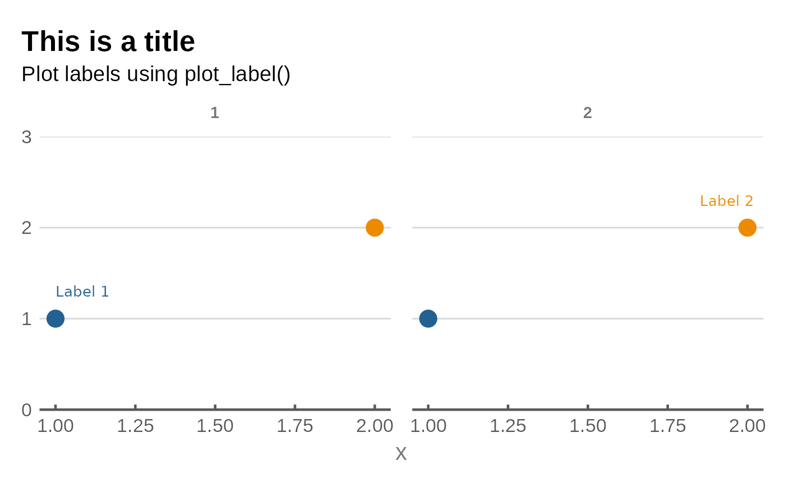

Adding on-graph labels
Economics Insights
ongraph-labels.RmdWhy labels?
Coloured labels placed directly on the plot are better than graph legends when you are making the final, polished version of a graph for presentations, notes and briefings for three key reasons.
Labels make it much easier for the reader to identify what group each colour corresponds to, without having to do the rapid eye twitch from the graph to the legend and back again. Repeat this for every group present on the graph and soon you have a recipe for eyestrain.
Labels make more efficient use of the available space on a graph by removing the need to make room for a legend. Legends create unused white space around the legend element and force the plot to be shorter or narrower than it otherwise would be.
Labels are more aesthetic than legends.
Adding labels with plot_label()
The simplest way to add plot labels is to use the
plot_label() function in esctheme. The
following code provides an example. Most of the code is to set up the
mock data and create a chart, the only two lines that are important are
the plot_label() lines.
plot_label() requires you to provide the text of the
label (label), and the x and y
positioning. For more information, see the documentation
(?plot_label).
When using this function, make sure the wording of the vector of label names in the label argument are exactly the same as the colour/fill aesthetic being plotted, and the order of the label vector matches the order of the colour/fill aesthetic for the ordering of the colours.
One way to ensure this is by setting the column in the data to be an
ordered factor, and calling the label names using
levels(data$col_name).
## basic example code
# create a dataset
esc_colours <- esc_palette(4)
specie <- c(rep("sorgho" , 4) , rep("poacee" , 4) , rep("banana" , 4) , rep("triticum" , 4))
condition <- rep(c("Normal" , "Stress" , "Nitrogen", "Other") , 4)
value <- rep(c(-5 , 15, -31, 26), 4)
data <- data.frame(specie,condition,value)
data <- data %>%
dplyr::arrange(specie, rev(value)) %>%
dplyr::group_by(specie) %>%
dplyr::mutate(label_y = cumsum(value)-0.5*value)
# Plot data with ESC style
data %>%
ggplot(aes(fill=condition, y=value, x=specie)) +
geom_bar(position="stack", stat="identity", show.legend = FALSE) +
scale_fill_manual(values = esc_palette(4)) +
scale_x_discrete(expand = expansion(add = c(0.5,1))) +
plot_label(
label = c("Nitrogen", "Normal", "Other", "Stress"),
x = c(rep(4.5, 4)),
y = c(-20, -5, 25, 10),
colour = esc_palette(4),
size = 4
) +
labs(title = "This is a title",
subtitle = "Plot labels using plot_label()") +
esc_theme(rm_y_leg = TRUE)Facets
When you have a facetted graph, you must specify the
facet_name and facet_value arguments in
plot_label().
data <- data.frame(
x = rep(c(1, 2), 2),
y = rep(c(1, 2), 2),
f_var = factor(c(1, 1, 2, 2)),
group = factor(c(1, 2, 1, 2))
)
data %>%
ggplot(aes(x, y, colour = group)) +
geom_point(size = 5, show.legend = FALSE) +
facet_wrap(~f_var) +
scale_colour_manual(values = esc_palette(2)) +
scale_y_continuous(limits = c(0,3), expand = expansion(mult = 0)) +
plot_label(
label = c("Label 1", "Label 2"),
x = c(1, 1.85),
y = c(1.3, 2.3),
colour = esc_palette(2),
facet_name = "f_var",
facet_value = "1"
) +
labs(title = "This is a title",
subtitle = "Plot labels using plot_label()") +
esc_theme(rm_y_leg = TRUE)
If you want to place the labels on different facets, simply supply a
vector to facet_value with which facet you want each label
to appear in.
data %>%
ggplot(aes(x, y, colour = group)) +
geom_point(size = 5, show.legend = FALSE) +
facet_wrap(~f_var) +
scale_colour_manual(values = esc_palette(2)) +
scale_y_continuous(limits = c(0,3), expand = expansion(mult = 0)) +
plot_label(
label = c("Label 1", "Label 2"),
x = c(1, 1.85),
y = c(1.3, 2.3),
colour = esc_palette(2),
facet_name = "f_var",
facet_value = c("1", "2")
) +
labs(title = "This is a title",
subtitle = "Plot labels using plot_label()") +
esc_theme(rm_y_leg = TRUE)